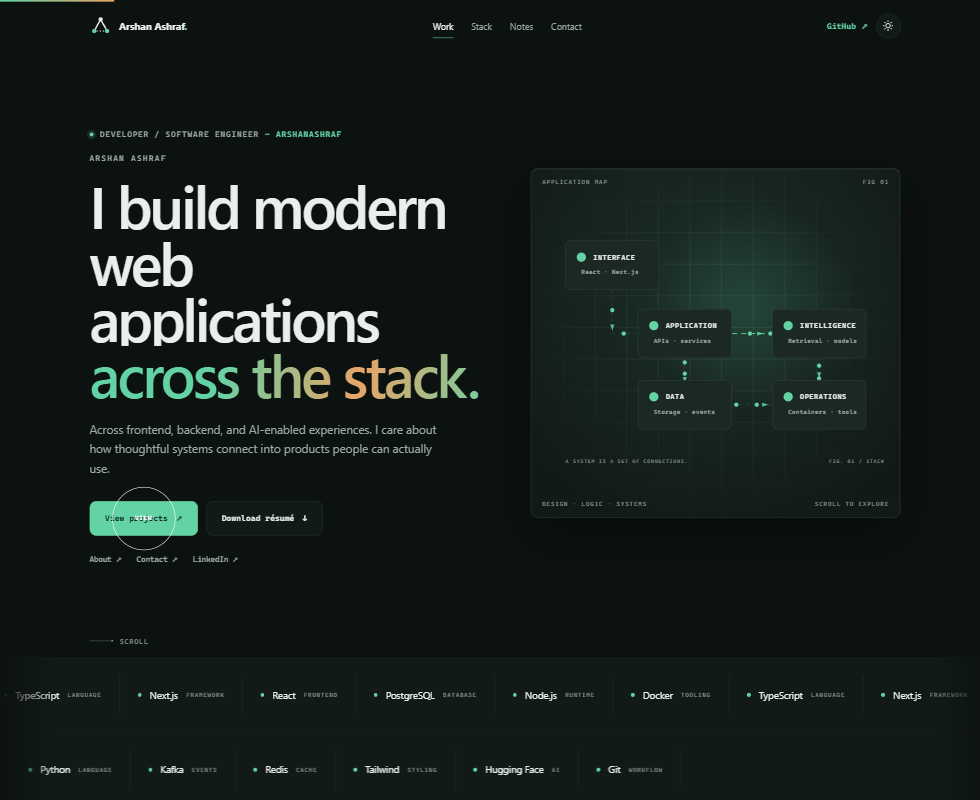
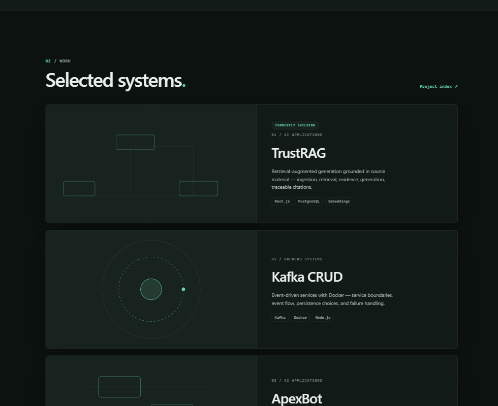
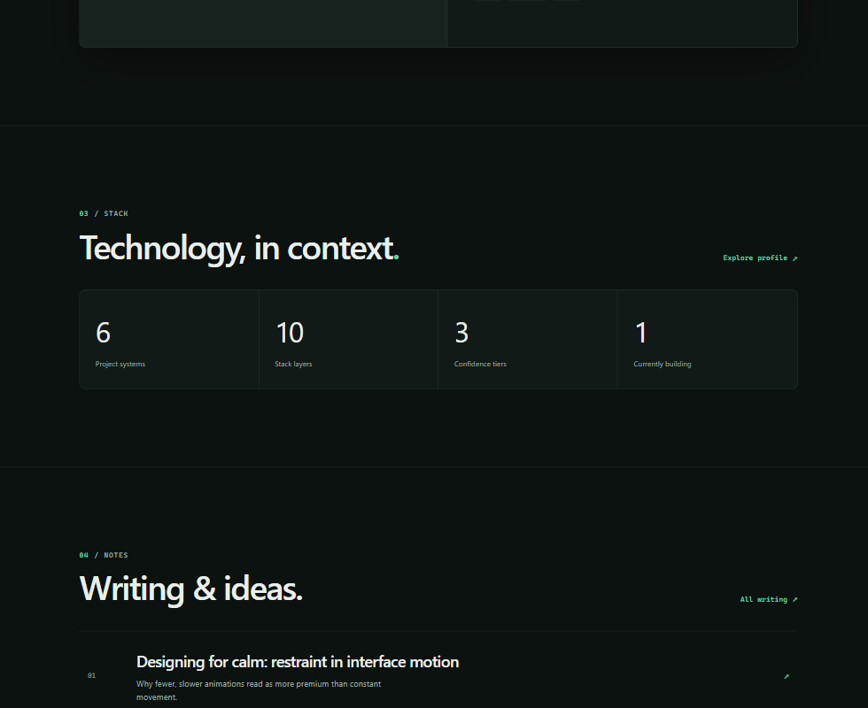
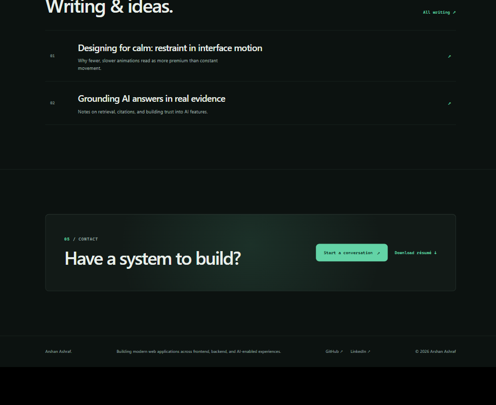
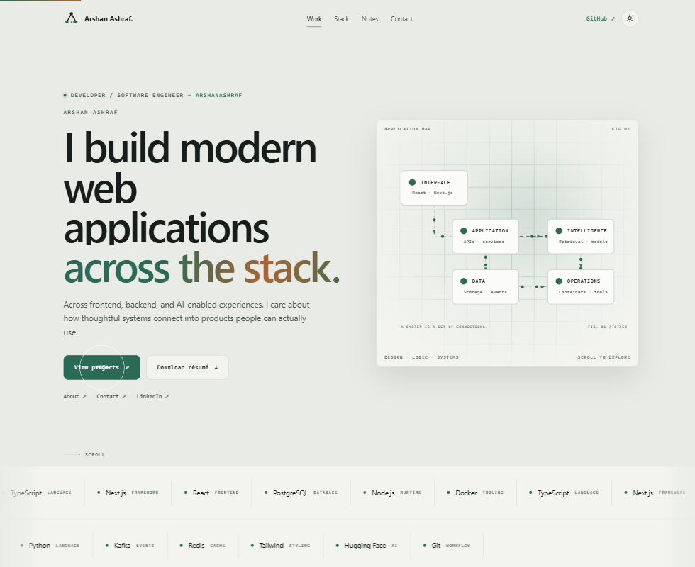
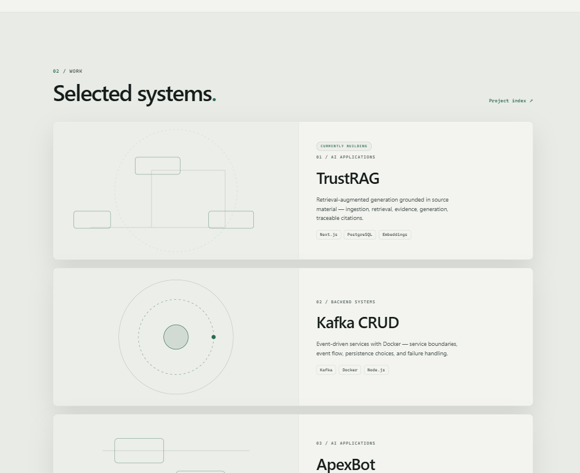
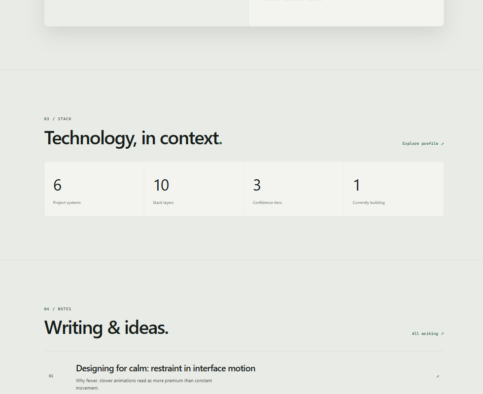
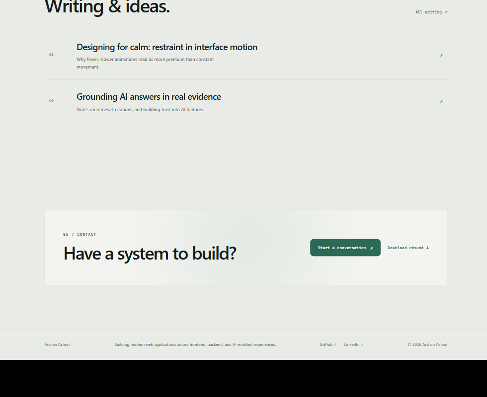

Dark by default, a softened low-glare light theme, theme-aware card edges, an animated application map, and sticky stacking project cards. These are static captures, so motion reads as a single frame — the behaviours are listed below each set.
Cards carry a per-theme edge token, brighter than the internal hairlines, plus an inset top highlight so panels read as raised surfaces rather than flat fills.




Paper-toned background, raised cards in near-white, and the accent darkened to #2b6a56 so coloured text keeps its contrast on light surfaces.




--card-line / --card-edge tokens. Cards (hero panel, project cards, stats, contact band) use a stronger edge than inner dividers, plus an inset highlight. On hover a project card's border warms toward the accent.mix-blend-mode: difference, snaps magnetically to buttons, and shows a contextual label. Disabled on touch devices; text fields keep the native caret.prefers-reduced-motion, and gradient text is reset so it can never render invisible.